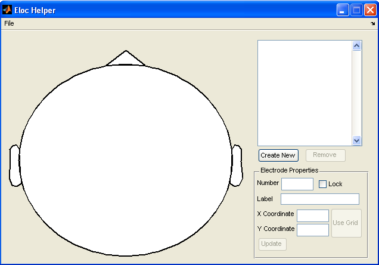

Eloc Helper
User Reference
Eloc Helper is a tool for creating EEG or ECoG montage files. 
Contents |
Installing and Running
In order to run Eloc Helper you'll need a system running either Windows XP or 2000. If your system meets this requirement, please choose from one of the following:
Systems with MATLAB v7.0 or greater installed
Startup Script
If you have not yet opened MATLAB, the easiest way to run Eloc Helper is to double click the ElocHelper.bat file that resides in tools/OfflineAnalysis/
From the MATLAB command line
If MATLAB is already running, navigate to tools/OfflineAnalysis/ using the Current Directory explorer or typing the absolute path into the textbox at the top of the MATLAB window. Then, type elocHelper at the MATLAB command prompt in order to begin analyzing your data.
Systems that do not have MATLAB installed or with versions that predate MATLAB v7.0
- Install the MATLAB Component Runtime (MCR)
- Click here to download the MCR installer for Windows.
- When the download is complete, run the installer.
- Follow the on-screen instructions to complete the installation.
- Navigate to tools/OfflineAnalysis/
- Double-click elocHelperWin.exe to begin analyzing your data.
Reference
For a BCI2000 Offline Analysis and Eloc Helper tutorial, please see User Tutorial:Performing an Offline Analysis of EEG Data and User Tutorial:Performing a Time-Domain Offline Analysis of EEG Data.
Menus and Buttons
File>New>EEG Electrode Location File - Clicking this menu item will allow you to begin creating a new EEG electrode location file. When performing this operation, all previously entered data is removed.
File>New>ECoG Electrode Location File - Clicking this menu item will allow you to begin creating a new ECoG electrode location file. When performing this operation, all previously entered data is removed.
File>Import>EEG Electrode Location File - Clicking this menu item will allow you to import an existing EEG electrode location file. When performing this operation, all previously entered data is removed.
File>Import>ECoG Electrode Location File - Clicking this menu item will allow you to import an existing ECoG electrode location file. When performing this operation, all previously entered data is removed.
File>Export to>BCI 2000 Electrode Location File - Clicking this menu item will allow you to export to an electrode location file compatible with BCI2000. Please note that the "BCI2000 Electrode Location" file format is not a valid import format for Eloc Helper. Therefore, it is recommended that you also export your data to "Offline Analysis Electrode Location" files.
File>Export to>Offline Analysis Electrode Location File - Clicking this menu item will allow you to export to an electrode location file compatible with the Eloc Helper tool.
Create New - Clicking this button adds a new electrode with a default number and label.
Remove - Clicking this button will result in the removal of whatever electrode is selected in the electrode list box.
Use Grid - Clicking this button and then clicking on a valid electrode location on the electrode map will set the X and Y coordinate fields to the X and Y coordinates of the location that was clicked.
Update - Clicking this button will validate the electrode properties. If all properties are valid, the current electrode properties and the electrode list will be updated accordingly.
Fields
Number - This field corresponds to the order of the electrode in the file. Typically, it would also correspond to the amplifier channel number. You may enter any strictly positive integer (e.g., 1, 2, 3...). If the number entered is already in use by another electrode, the updated electrode will be assigned that number and other electrode numbers will be shifted to make room. If you prefer for the entered value not to be changed, check the "Lock" checkbox.
Lock - The "Lock" checkbox protects the electrode number value thus preventing the value from being changed automatically as explained in the description of the "Number" field.
Label - The "Label" field is a string of up to 4 characters that identifies the electrode. Typically, the 10-20 naming and positioning scheme is used to determine the label values so as to indicate the approximate location of the electrode. See User Tutorial:EEG Measurement Setup for more information about the 10-20 system.
X Coordinate - The "X Coordinate" field corresponds to the normalized X coordinate of the electrode. The simplest manner of setting both the X and Y coordinates is to click the "Use Grid" button and then click the desired location on the electrode map.
Y Coordinate - The "Y Coordinate" field corresponds to the normalized Y coordinate of the electrode. The simplest manner of setting both the X and Y coordinates is to click the "Use Grid" button and then click the desired location on the electrode map.
Troubleshooting
Clicking on any button results in the error "Undefined command/function ..." followed by "Error while evaluating figure ..."
If you're receiving this error, it is likely that after opening BCI2000 Offline Analysis you changed MATLAB's working directory. Make sure that your working directory is the same directory that contains the elocHelper.m script.
The file I exported does not import properly
While Eloc Helper can export to two different formats, it can only import "Offline Analysis Electrode Location" files. If you are having trouble importing a previously exported file, it is possible that you exported to a "BCI2000 Electrode Location" file which is an accepted format for export but not for import.
![[BCI2000 Help]](../../images/bci2000logo_small.png)
{kind=link}